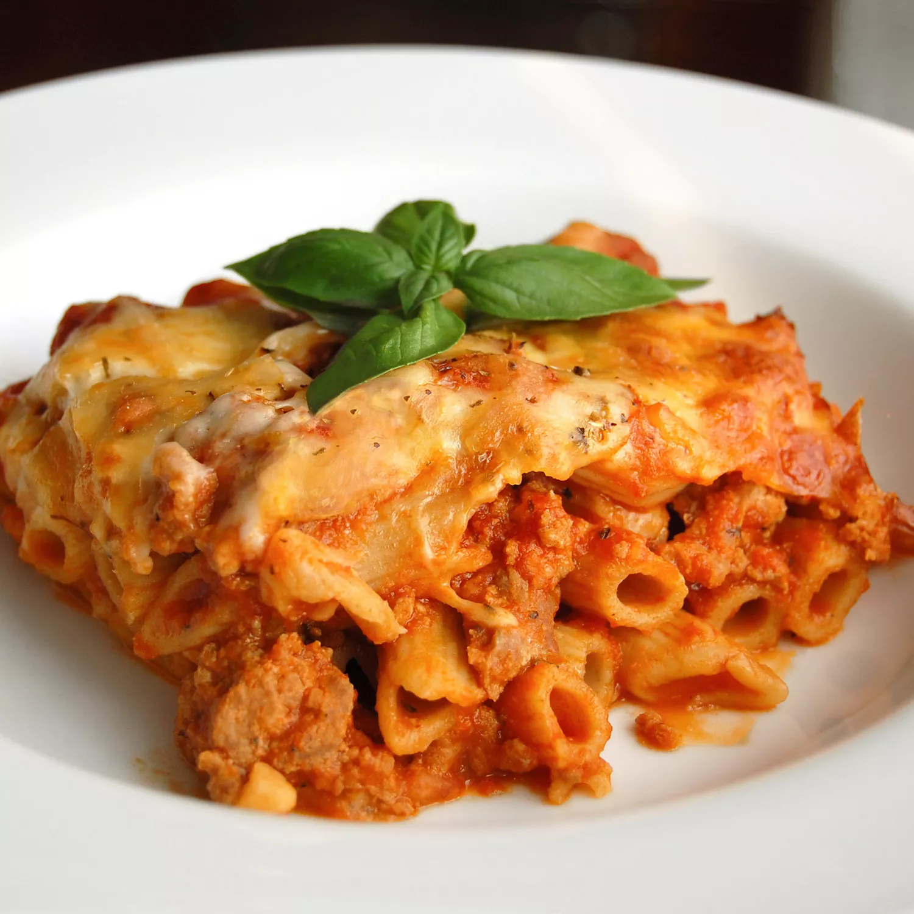

Baked Ziti

Description
In this recipe, we will find out how to make the perfect Baked Ziti. If you love pasta and cheese, this is the one for you!
Ingrediants
- 1 pound of dry ziti pasta
- 1 onion, chopped
- 1 pound of lean ground beef
- 2 jars of spaghetti sauce
- 6 ounces of provolone cheese, sliced
- 1 1/2 cups sour cream
- 6 ounces of mozzarella cheese, shredded
- 2 tablespoons grated Parmesan cheese
Steps
- Bring a large pot of water to a boil and add ziti pasta for about 8 minutes then drain the pasta.
- Meanwhile, brown ground beef and onion in a large skillet over medium heat. Stir in spaghetti sauce and simmer for 15 minutes.
- Prehead the oven to 350 degrees and butter a 9x13 baking pan.
- Spread 1/2 of the ziti in the bottom of the baking dish. Top with provolone, sour cream, 1/2 of the meat sauce, remaining ziti, mozzarella cheese, and then remaining meat sauce. top with Parmesan cheese.
- Bake in the preheated oven until heated through and cheeses have melted, about 30 minutes.
- Enjoy!